扉页
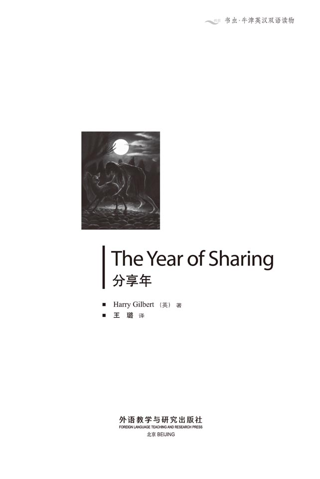
版权页
京权图字 01-2006-3296
Originally published by Oxford University Press, Great Clarendon Street, Oxford. © 2000
This edition is licensed for sale in the People's Republic of China only and not for export therefrom.
'Oxford' is a registered trademark of Oxford University Press.
图书在版编目（CIP）数据
分享年 = The Year of Sharing／（英）吉尔伯特（Gilbert, H.）著；王璐译．—北京：外语教学与研究出版社，2007.7（2014.7 重印）
（书虫·牛津英汉双语读物）
ISBN 978-7-5600-6819-0
Ⅰ．分… Ⅱ．①吉…②王… Ⅲ．①英语—汉语—对照读物②中篇小说—英国—现代 Ⅳ．H319.4：I
中国版本图书馆CIP数据核字（2007）第104901号
出版人： 蔡剑峰
责任编辑：王霖霖
封面设计：孙莉明
出版发行：外语教学与研究出版社
社 址：北京市西三环北路19号（100089）
网 址：http://www.fltrp.com
版 次：2007年7月第1版
书 号：ISBN 978-7-5600-6819-0
* * *
凡侵权、盗版书籍线索，请联系我社法律事务部
举报电话：（010）88817519 电子邮箱：banquan@fltrp.com
法律顾问：立方律师事务所 刘旭东律师
中咨律师事务所 殷 斌律师
内容简介
内容简介
五百年后的世界会是什么样子呢？城市会越变越大吗？楼房、汽车、工厂会不会越来越多？噪音、烟雾、尘土会不会越来越多？那些任由动物自生自灭的绿色森林还会存在吗？
理查德的未来世界跟这些情况很不一样：那里只有自行车，没有汽车；只有村庄，没有城市。而世界上的森林只属于野生动物，那里一直是它们生活的家园。
理查德厌倦了乡村的平静生活，他已经12岁了。他想要一辆汽车，开着它风驰电掣。但是，世界上所有人都必须在12岁的时候履行“分享年”。到明天早晨，理查德就要去森林深处了。他会有一个新家庭——成员都是野生动物的家庭。他将和它们在一起生活一年，将会经受寒冷、饥饿和疲惫，但是他会学到很多——学会如何与其他动物分享这个世界。
学这一课并不简单，森林里有很多危险正等待着理查德……
THE YEAR OF SHARING
THE YEAR OF SHARING
What will the world be like five hundred years from now? Will cities become bigger and bigger, with more buildings, more cars, more factories, more noise and smoke and dirt? Will there be any green forests left, where animals can live and die in freedom?
Richard's future world is very different from this. There are no cars, only bicycles. There are no cities, only villages. And the forests of the world are only for the wild animals that have always lived there.
Richard is bored with the quiet life of his village. And now he is twelve years old. He would like to have a motor-car and drive it...very fast. But, everyone in the world must do their Year of Sharing when they are twelve years old, and by tomorrow morning Richard will be somewhere deep in the forest. He will have a new family — a family of wild animals, and he will live with them for one year. He will be cold and hungry and tired, but he will learn — learn to share the world with other animals.
It is a hard lesson to learn, and there are many dangers waiting in the forest...
目录
1．A goodbye party
1
A goodbye party
Is somebody listening to this? If there is, hello.
There's a party going on. There are four of us doing our Year of Sharing this year — four of us who are twelve years old. The party is for all their family and friends.
I keep touching my nose. That's where they put the recorder. I can't feel it in my nose, but it's there. It will record all my words when I speak, and any other sounds which are near me. The recorder will go on working for one year.
Can you hear the sounds of the party? Music, talking, laughing, dancing. Is everybody happy?
The answer is no. Everybody has their Year of Sharing when they're twelve, and half of them don't come back. They die. This is a goodbye party.
Perhaps you think I'm afraid. Well, I'm not. I'm the only person here who has no friends or family at the party. I didn't ask any friends to come. My mother's too busy (as usual). I specially asked my father not to come — he would cry. I don't want people to see him crying.
I'm going outside. I don't want to talk to anybody.
I can't count all the bicycles by the wall here — half the village is at this party! I didn't bring my bicycle because I'm not going home after the party.
I would really like a car, not a bicycle, because I love to go fast. I've seen cars in old films, but there are no cars in the world now — no cars, no roads, no factories, no big towns, just little villages like this one. In the old days, they say, the world was a bad and dirty place and animals were dying because of all those cars and factories. Was that really true? I don't know.
Now the world is very boring. We live quietly in our villages, we don't eat meat, and we make everything ourselves with our hands.
I'm sitting outside alone. I've always been alone and that's OK. I'm clever, fast and strong and I'm not going to die in this Year of Sharing. I've always been best at everything in the village school. Now I'm going to be best among the animals. Here's the doctor.
'Hello, Richard. Alone?'
'What do you want, doctor?'
'I want to look at your nose and make sure the recorder's OK. Look up. Look down. Good. After one year we will write down every word from your recorder and make a wonderful book for you. Richard's Year of Sharing.'
'Doctor, I don't want a stupid animal like a cow or a sheep. I want something big, strong and fast, an animal which is not afraid. A clever animal like me.'
'You'll get the animal which is best for you. Does your nose hurt when I touch it here?'
'No.'
'What can you smell when I open these bottles?'
'I can smell...leaves. Milk. Blood.'
'OK, your nose is fine. Richard...life is easy when you live with people, you know. You will find it harder with animals. I don't know if you're ready. Remember, it's life or death.'
The doctor's gone. The sky is beginning to get dark. When it's full night, they'll take us — the four of us — to four different animal families. Good. I don't belong in this village. I don't think I belong with people. Not people in today's world.
In the old days people were everywhere in the world. Millions of them. They were free to go where they wanted and to do what they wanted. Now there are walls round our villages and we can't go out, and only animals are free.
Oh no!
'Let me just shake hands and say goodbye, Richard.'
'Dad, you said you wouldn't come.'
'I'm sorry your mother couldn't come. She had to meet some very important people from all over the world to talk about animals in danger. It was very important business. She wanted to come and say goodbye to you but...'
'Don't try and explain. She's always the same. OK, shake hands and go.'
Dad's gone. It's dark. There's no moon tonight. The stars are very bright.
Soon a doctor will give us something to put us into a deep sleep. When we wake up, we will be with an animal family. The doctor will give me a special smell; I'll smell like a baby in that animal family.
Isn't that terrible? Perhaps the animal family don't want another baby...but they will smell me and they'll love me. Is love just a special smell, for animals? It's all wrong. I don't like doctors.
Everybody is crying now. Can you hear them? There's no laughing or dancing any more. Here's the doctor coming. In a few minutes I'll be asleep. Goodbye, village. When I see you again, I won't be a child any more. I can't wait!
recorder n. a machine which records words or music 录音机
specially adv. for one particular purpose and only for that purpose 特意地，专门地
make sure to do something because you want to be sure that something happens 确保
stupid adj. showing a lack of good sense or good judgement; silly 愚蠢的，傻的
remember v. to do something that you have to do, and not forget about it 记住
bright adj. emitting or reflecting much light; shining 发光的，明亮的
terrible adj. making you feel afraid or shocked 可怕的；令人震惊的
告别聚会
1．告别聚会
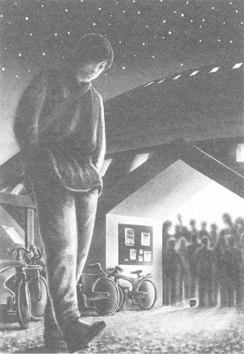
有人在听吗？如果有，你好。
这里正在举办一个聚会。今年，我们当中有四个人要履行“分享年”——四个满12岁的人。聚会是为他们所有的家人和朋友举办的。
我不停地摸着自己的鼻子，录音机就被他们放置在鼻子里，我感觉不到它，但是它确实在那儿。它会记录下我说的所有话，以及我身边的任何声音。这个录音机会一直工作一年。
你能听到聚会的声音吗？音乐、交谈、笑声、舞蹈，每个人都快乐吗？
答案是否定的。每个人都要在12岁的时候履行自己的“分享年”。有一半的人再也不会回来，他们死了。这是个告别聚会。
也许你以为我害怕了，其实我没有。我是唯一一个没有家人和朋友出席聚会的人。我没有邀请任何朋友来。我的母亲太忙了（她一向如此）。我特别告诉父亲不要来——他会哭的。我不想让别人看到他哭。
我要到屋外去，因为我不想和任何人讲话。
数不清的自行车靠在墙边——村里一半的人都来参加聚会了！我没有骑车来，因为聚会结束后我就不打算回家了。
我真想有辆汽车，而不是自行车，因为我喜欢速度。我在老电影里见过汽车，但是现在的世界已经没有汽车了——没有汽车、没有公路、没有工厂、没有大城市，只有像这样的小村庄。人们说，过去的世界又脏又乱，汽车和工厂导致了动物的死亡。这是真的吗？我不知道。
现在的世界单调沉闷。我们平静地生活在村庄里。我们不吃肉，我们什么都自己动手做。
我一个人坐在外面。我总是一个人，这样挺好。我聪明、灵敏而又强壮，我不会在“分享年”中死去。我在村庄的学校里做什么都是最棒的。现在我也要成为动物中最棒的。这时医生走了过来。
“你好啊，理查德，一个人吗？”
“有事吗，医生？”
“我想看一下你的鼻子，确保录音机工作正常。抬头，低头，好了！一年以后，我们会把你的录音机里录的每一个字都写下来，为你做一本精彩的书，叫做《理查德的分享年》。”
“医生，我不想要像牛或羊这样愚蠢的动物。我想要大的、强壮的、敏捷的动物，无所畏惧，像我一样聪明的动物。”
“你会得到最适合你的动物。我摸你鼻子这里时，你觉得痛吗？”
“不痛。”
“我打开这些瓶子，你都能闻到什么？”
“我能闻到……叶子、牛奶、血。”
“好，你的鼻子没问题。理查德……你知道，和人在一起生活是容易的。你会发现和动物在一起就有些困难了。我不知道你是否准备好了。记住，不是生就是死。”
医生走了，天渐渐暗了下来。当天完全黑了以后，就会有人来把我们——我们四个人——带到四个不同的动物群里去。这挺好的，我不属于这个村庄，我觉得自己不属于人类——现在的人类。
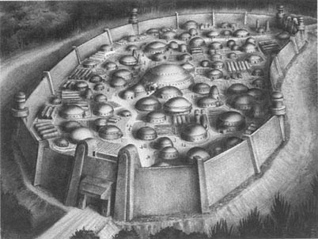
在过去，人们生活在世界的每个角落，数以百万计。他们想去哪儿就去哪儿，想干吗就干吗。现在村庄外都筑起了围墙，我们不能出去，只有动物是自由的。
噢，不！
“我只是来握握手说再见的，理查德。”
“爸爸，你说好不来的。”
“对不起，你母亲来不了了。她要和一些来自世界各地的大人物会面，讨论濒危动物的问题。这是很重要的事务。她想来和你告别，但是……”
“不要帮她解释了，她总是这样。好吧，握握手，你走吧。”
爸爸走了。天也黑了，今晚没有月亮，星星却非常明亮。
很快，医生就会给我们些药物，让我们熟睡过去。醒来之后，我们就会和某群动物在一起了。医生还会给我一种特别的体味，让我闻起来就像是那个动物家族的宝宝一样。
可怕吗？也许那个动物家族并不想再要一个新宝宝……但是他们闻到我的味道就会爱上我。对动物来说，爱就是一种特殊的体味吧？这真荒谬。我不喜欢医生。
现在每个人都在哭。你能听见吗？没人欢笑舞蹈了。医生来了，几分钟后我会进入梦乡。再见吧，村庄。当我再见到你的时候就不再是孩子了。我都等不及了！
2．Deer
2
Deer
Where am I? Where is everybody? Where's the village?
Oh!
I remember.
I've just woken up. I think it's early morning. It's still a little dark because there are trees all around me.
I don't want to sit up and look yet. When I sit up, I will see my animal family. I think I can smell them. I feel a little ill. People don't smell like that.
The trouble is, I've never been near an animal before. We don't have animals in the village, of course. We have to leave animals alone, so we always stay behind our village wall. In the old days people kept cats or dogs in the house; today you would go to prison for keeping an animal.
I'm going to sit up and look at my animal family now.
They're deer. I didn't want deer. I wanted a strong animal which can fight, not an animal which runs away like deer. Well, I'm not going to run away.
One of the deer is looking at me because I'm moving. I'm trying to stand up but it's difficult. My body is cold; I've never been so cold in my life. I was lying on the wet ground and of course they didn't give me any clothes to wear. I have to move very slowly until I get warm.
There are three deer — no, four. I didn't see the fourth at first because it's very small. I think it's a baby. It's lying beside the deer which is looking at me — I think that's its mother.
The mother is watching me carefully — she thinks I'm her baby too. Poor mother! I'm a strange baby for her to have. There's another deer which looks young — perhaps one year old. The last deer is the biggest — I think he's the father of the two young deer.
There's more light now. The deer are moving around, taking leaves from the trees and eating them. I'm hungry too. I want my breakfast.
What's for breakfast, mother? Don't answer that. I don't think I can eat your food. I know how to find fruit which is good for me and to look in the ground for roots to eat; I learnt all that in the village school. Everybody learns because everybody does the Year of Sharing.
I'll just take a walk and find some food.
Hey, get off! Stop that! What are you doing?
That was the big deer which is the father, I think. He didn't let me take a walk. He ran and pushed me back next to mother. This is terrible. Because of my smell, he thinks I'm a baby. Listen, father — I want to find something to eat!
Deer don't talk much, do they?
* * *
Sorry I haven't said anything for a long time. There's nothing to say. I'm very, very hungry. I've missed breakfast and I've missed lunch and soon I'm going to miss dinner. It's late afternoon. This deer family likes to move around a lot.
Mother and Baby and I stay together — Father makes sure of that. Brother — the other young deer — sometimes stays with us, but is often alone. Father doesn't like it if Brother follows him.
I've looked for roots in the ground but I haven't found anything. I saw a tree with good fruit on it. I tried to climb the tree but Father knocked me off with his antlers. He was angry. Deer don't climb trees!
So I am HUNGRY.
I'm not cold now. That's because we move around a lot. My arms and legs have a lot of little cuts on them. Well, I'm not wearing clothes and so I keep cutting myself on trees and other things. And my feet hurt.
I didn't think that life with animals would be like this. thought my new life would be fast, dangerous and exciting. It isn't. We just walk through the trees. The deer eat while I watch and feel hungry. Then we walk on a little more.
The deer don't talk, they don't make any sounds. Well, sometimes Mother makes a little noise to Baby (and to me because I'm a 'baby' too). And Baby answers with another little noise. But it's nothing special. Mother is saying, 'Where are you?' and Baby is answering, 'I'm here.' That's all.
When Mother asked me, 'Where are you?', I didn't answer at first. But she went on asking and asking and asking, and I felt sorry for her. I'm her baby, or she thinks I am. So then I answered, 'I'm here,' like Baby — I tried to make the same sound as Baby. I'm sure it's right because Mother asks only once now.
Father never talks to Mother. Brother sometimes makes the noise for, 'I'm here,' but nobody listens.
I like Baby. She's sweet. Yes, she's a girl deer. She's soft to touch, she's funny and she's always jumping up and down. She smells of milk.
Because I have nothing to do, I play with Baby. I try to catch her. We run round and round Mother. Then she goes under Mother and I follow, which is funny because I'm nearly as big as Mother. Mother stops moving because she doesn't want to put her foot down on one of us. When I catch Baby, she suddenly jumps out of my arms. She's like a ball—she uses her four legs to push hard and she jumps high up.
One day of this life is interesting. Not comfortable, but interesting. Two days will be a little boring, I think. After three days I'll want to scream. And I've got a year of this life...
* * *
It's evening now. It suddenly got dark. And cold. I haven't eaten a single thing all day. We swam across a river in the afternoon, so I drank a lot of water then.
These deer are really good at swimming. Baby can swim too — but Mother and Father helped Baby and me.
The deer family is going to spend the night here. All right. I would like to go and look for something to put over myself, to keep myself warm. I don't think Father will let me. Let's see.
I was right. Father didn't let me. I'll just have to be cold.
It's spring — the Year of Sharing usually begins in spring. I don't know what a winter night will be like. Perhaps I will learn to keep warm by then.
Brother is asleep. Baby is lying beside Mother. Father is walking in a slow circle around us. He's listening and smelling the wind. He'll make sure we're not in danger. I'm sitting on the ground, with my arms round my body, trying to keep warm, but I'm shaking with cold.
Baby is drinking Mother's milk.
For the first time today I feel lonely. I don't often feel lonely. I don't need people. I think it's the dark and the cold and being hungry and feeling sorry for myself and listening to Baby drinking Mother's warm milk and knowing that I can't do that.
Mother just said, 'Where are you?' to me.
I made the sound which means, 'I'm here.'
* * *
I'm falling asleep while I speak. I drank Mother's milk. I'm lying with Baby next to Mother and it's very warm. I don't feel lonely. Good night.
prison n. a place where people are kept as punishment for committing a crime 监狱
strange adj. not familiar or known to you 陌生的
root n. the part of a plant which grows under the ground 根
miss v. to fail to catch 错过
antler n. one of the two horns which grow on a male deer's head 鹿角
sweet adj. kind, gentle, and friendly 温柔的，友好的
scream v. to make a loud high cry because you are hurt, frightened, or excited 尖叫
single adj. only one 单个的，一个的
spend v. to stay somewhere or do something for a period of time 度过
mean v. to have a particular meaning 表示……的意思
鹿
2．鹿
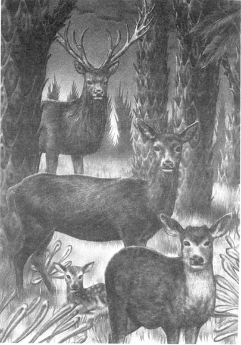
我在哪儿？大家都去哪儿了？村庄呢？
噢！
我记起来了。
我刚刚醒过来，我想现在是清晨。天看起来仍然有些昏暗，因为我的周围都是树。
我还不想坐起来张望。因为我坐起来后，就会看见我的那个动物家族。我想我闻到了它们的味道，我有一点儿不舒服。人的味道和这不一样。
问题是，我以前从来没有接近过动物。我们村子里当然没有动物。我们得让动物自由生活，所以只能待在围墙后面。过去，人们能够在家里养猫养狗，但是现在，豢养动物是要坐牢的。
我现在要坐起来，看看我的动物家族了。
它们是鹿。我不想和鹿在一起。我喜欢强壮擅斗的动物，不喜欢像鹿这样动不动就逃跑的动物。反正，我不会逃跑的。
有一只鹿正看着我，因为我在动。我试图站起来，但是非常困难。我的身体冰凉，一生中从没有这么冷过。我躺在湿漉漉的地上，他们当然没有给我衣服穿。在身体暖和起来之前，我只能慢慢地挪动。
一共有三只鹿——不，是四只。一开始我没有看到第四只，因为它太小了。我想那是只鹿崽。它躺在一只鹿的身旁，那只鹿正看着我，我想它是小鹿的妈妈。
鹿妈妈仔细地打量我——它以为我也是它的孩子。可怜的鹿妈妈！我是它陌生的孩子。另一只鹿看起来也不大——大概一岁的样子。最后一只鹿个子最大——我想它是两只小鹿的爸爸。
天亮了一些。群鹿四处走动，从树上采叶子吃。我也饿了，想吃早餐。
早上吃什么，妈妈？别回答，我想我吃不了你们的食物。我知道怎么找到对我有益的水果；我还知道怎么从地里挖树根来吃。我在村里的学校都学过。因为过“分享年”的缘故，每个人都必须学这些。
我要走一走，去找些食物。
嘿，走开！别这样！你在干吗？
是那只个子最大的鹿，我想那是鹿爸爸，它不让我走开。它跑过来把我拱回鹿妈妈身边。真可怕，因为我身上的味道，它以为我是一只鹿宝宝。听着，鹿爸爸——我想去找东西吃！
鹿不怎么讲话，是吧？
* * *
对不起，我很长时间没有讲过话了，没什么可讲的。我非常非常饿。我没有吃早餐，没有吃午餐，很快也要错过晚餐了。已经快到傍晚了。这群鹿非常喜欢四处走动。
鹿妈妈、鹿宝宝和我待在一起——鹿爸爸要确保这一点。鹿哥哥——另一只年纪不大的鹿——有时候和我们在一起，但是经常落单。鹿爸爸不喜欢鹿哥哥跟着它。
我在地里找树根，但是什么都找不到。我看到树上有新鲜的水果，我试图爬到树上，但是鹿爸爸用鹿角把我扯了下来。它生气了，因为鹿不爬树！
所以我就饿着肚子。
我现在不冷了，那是因为我们一直在走来走去。我的手臂和腿上伤痕累累。唉，我没有穿衣服，所以碰到树或其他什么东西就会弄伤自己。我的脚也痛。
我没有想到和动物一起生活会是这样。我以为我的新生活应该是迅捷、惊险、刺激的，但情况并非如此。我们只是在林间穿行。那几只鹿美餐时，我却饿着肚子眼巴巴看着。然后我们就继续漫步。
鹿不讲话，它们不发出任何的声音。然而，有时候鹿妈妈也会对着鹿宝宝发出一点儿声响（对我也是，因为我也是“鹿宝宝”）。鹿宝宝会用另一种细弱的声音回答，没什么特别的。妈妈说：“你在哪儿？”宝宝回答：“我在这儿。”就这么简单。
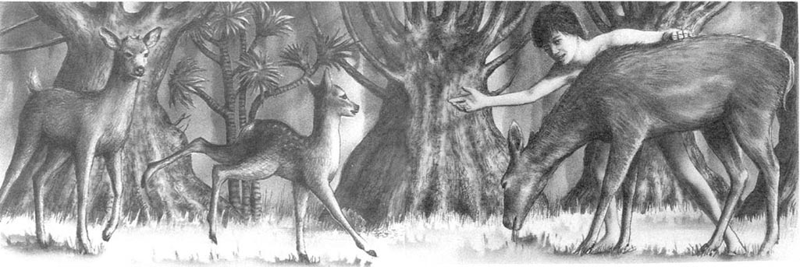
当鹿妈妈问我“你在哪儿？”时，一开始我没回答。但是它一次接一次不停地问，我挺可怜它的。我是它的宝宝，至少它是这么想的。所以后来我回答了：“我在这儿。”就像小鹿一样——我试着发出和鹿宝宝一样的声音。我肯定这声音没错，因为鹿妈妈现在只问一次了。
鹿爸爸从不和鹿妈妈讲话。鹿哥哥有时会说：“我在这儿。”但是没人理它。
我喜欢鹿宝宝，它很乖。是的，它是只小母鹿。它摸起来很柔软，它也很有趣，总是跳上跳下的，闻起来有股奶味。
我无事可做，于是和鹿宝宝一起玩。我想捉住它。我们绕着鹿妈妈跑啊跑，然后它钻到鹿妈妈肚子下面，我也跟着。这很好笑，因为我的个头和鹿妈妈差不多大。鹿妈妈停了下来，因为它不想踩到我们俩。当我捉到小鹿后，它突然从我的怀抱里跳了出去。它像一个球——用四条腿用力后蹬，然后高高跃起。
这样过一天挺有意思，虽然并不舒服，但是有意思。第二天就会有点儿无聊了，我想；三天后我会想要尖叫。但我要这样过上一年……
* * *
现在是傍晚了，天突然全黑了，而且很冷。这一天里我什么都没吃。我们下午游过了一条河，我当时喝了很多水。
这些鹿很会游泳。小鹿也能游——但是鹿妈妈和鹿爸爸帮助小鹿和我来着。
群鹿一家准备在这里过夜了。好啊，我要去找一些东西遮在身上保暖。我想鹿爸爸不会让我去，我要试试。
不出意料，鹿爸爸不让我走开。我只能继续挨冻。
现在是春天——“分享年”都是从春天开始的。我难以想象冬天的晚上会是什么样，希望到时候我已经找到了保暖的办法。
鹿哥哥已经睡了。鹿宝宝睡在妈妈的身旁。鹿爸爸慢慢绕着我们转圈子。它在听风的声音和闻风的味道。它要确保我们没有危险。我坐在地上，用双臂搂住身体，尽量保持温暖，但还是冷得发抖。
小鹿在喝妈妈的奶。
今天我第一次觉得寂寞。我并不常常觉得寂寞。我不需要和人在一起。我想是因为天又黑又冷吧；我饿着肚子，为自己感到难过。我还听见小鹿在喝妈妈那温暖的鹿奶，我却不能。
鹿妈妈只是问我：“你在哪儿？”
我发出声响：“我在这儿。”
* * *
我说着说着就睡着了。我喝了鹿妈妈的奶，和小鹿一起挤在鹿妈妈的身边，非常温暖。我不觉得寂寞了。晚安。
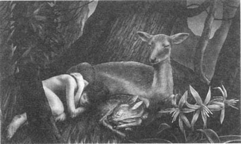
3．Wolves
3
Wolves
I've just lived through the worst two weeks of my life. I feel a lot better now; that's why I'm speaking again. I didn't want to say anything when there wasn't anything good to say.
It rained most of the time. When it wasn't raining, the water was still falling off the leaves of the trees. I was wet, cold, tired and hungry all the time. I was ill. My head hurt, my stomach hurt, my feet and legs hurt and I was always getting little cuts on my body. Worst of all I missed home; I wanted to be back in the village.
That's still true. I don't want to be here. Deer are not people. I said I didn't need people, but I think I was wrong. It's hard to think when you can't talk to anybody.
I'm friends with Baby and Brother. I like both of them. Baby is sweet and Brother is afraid of nothing. The two older deer are afraid of everything — afraid of birds singing, birds not singing, a cloud going over the sun, a leaf falling. When they're afraid, they jump. They're always jumping!
When Mother thinks we're in danger, she pushes me and Baby with her nose. She takes us to dark places in the forest where the trees are crowded together. We move quickly and quietly, in and out of the trees. I'm beginning to feel afraid of everything now. It's stupid. I've not seen anything to be afraid of.
I'm getting thin because I don't eat very much. I find a few wild vegetables and a little fruit every day and I drink Mother's milk before I sleep. That's all.
These deer eat all the time. They like eating from some trees, not others. Mother has to help Baby to get leaves and fruit. She tries to help me too, but deer food is not my food. I can't eat it.
Mother is unhappy because I'm not eating well. Poor Mother! I'm angry with her all day, but I sleep with her like a baby at night. It's strange. My feelings for Mother are very strong — stronger than my feelings for my real mother — both good and bad feelings.
Father doesn't come near us very often. He keeps walking around, up and down. He stands tall and looks through the trees. He puts his nose high up and smells carefully. He gets the best things to eat and he pushes the rest of the family away if they try to eat near him.
I didn't wear clothes for the first week and that was terrible because we're in the forest all the time, and couldn't stop getting cuts. So I made some clothes out of leaves. They're not very good clothes and I have to keep making new ones, but they stop most of the cuts and also keep me warm — well, not very warm, but I'm not as cold as before.
So I'm feeling better. A little warmer, a little more food in my stomach and my body doesn't hurt now.
And I'm stronger and quicker and I can hear and see better too. If you can't talk to anybody, you look and listen and smell.
Brother and I are always trying to see who can jump higher. I lose — most of the time. But I'm getting better. We both enjoy it.
There's no rain this morning, which is really wonderful. Up above there's only blue sky between the trees. Down here it's not warm, but it's not cold and wet any more.
Ow!
Something happened! Father ran up and knocked me over with his antlers. He wants me to be quiet. Now I'm speaking very softly. All the deer have stopped eating. Only Father is moving now, walking very slowly, putting one foot down carefully before moving the next foot.
It's very, very quiet. Not a sound anywhere. Why is it so quiet'? Why are there no birds singing?
Oh! Now I can see it. It's an animal coming through the trees, not quickly, not slowly. It's a wolf !
There's only one wolf. Oops! Mother just pushed me because she wants me to move. Now she's pushing Baby. The family is moving away, going deeper into the forest. Brother doesn't want to run away, and he's looking at me. Will I run away?
No, I'm not going to run. It's stupid. There are four deer and me against just one wolf. We can fight and the wolf will run away.
I'm staying. I've got a big stick and some stones and I can fight this wolf alone if I have to.
Father has gone. Mother's coming back for me — no, she isn't. She's stopped, she can't leave Baby.
Brother's coming to stand with me. Mother and Baby have gone. There's only Brother, me and the wolf now. I'm not afraid. Let's see how the wolf likes getting a stone on its nose. Take that!
I missed him! I'm good at throwing stones, but the wolf jumped to one side very fast. Now I'm throwing each stone as hard as I can. The wolf's jumping all over the place, but he's not running away. Well, I've still got my stick. Brother can use his feet to fight with. We'll be all right.
Oh no!
Two more wolves are coming, and they're coming fast. Brother, go! Get out of here! That's right.
Now I'm alone. There's only one thing to do.
* * *
I nearly died. I made a very big mistake when I decided to stand and fight. That's what a person does, not a deer. I'm a deer. I smell like a deer and so wolves think I'm a deer too.
I feel bad. I feel small, and unimportant. I'm not a person. I'm just an animal. If another animal is stronger than me, it can kill me. I didn't understand that before.
I saved Brother; I'm happy about that. The first wolf ran at me, very fast; I suddenly jumped right over him. I'm wonderful at jumping. After two weeks with deer, anybody would be wonderful.
The wolf didn't turn very quickly. I looked around for the other two wolves and saw that they weren't coming for me, they were following Brother. This was bad.
I screamed, because I wanted the wolves to think I was afraid; then they would follow me, not Brother. But when I screamed, I knew I really was afraid, and the wolves knew it too. That was terrible. All three wolves stopped and ran straight at me.
Yes, I was afraid! I dropped the stick and ran like a ...like a deer. There was a big tree in front of me and in seconds I was at the top of it.
And here I am. The wolves sat under my tree for hours with a hungry look in their eyes. They left not long ago, just before it got dark.
And this is where I'm staying. I can't find the deer in the dark. I can't lie down with Mother and drink her milk. I don't think I can sleep in a tree...but I'll try. And I'm sorry Brother nearly died because of me.
Will I see my deer family again'?
stomach n. the internal organ in which the first part of digestion occurs 胃
crowd v. (many things) to fill (the space) almost completely 挤,挨靠
vegetable n. a plant or a part of a plant used as food 蔬菜
oops int. used when a small mistake or slight accident has happened 哎哟
stick n. a thin piece of wood that has fallen or been cut off a tree 木棍
throw v. to use your hand to send something quickly through the air 扔
mistake n. incorrect thing 错误，过失
save v. to keep somebody from danger, or to stop somebody dying 搭救
straight adv. directly and immediately 直接地，径直
狼
3．狼
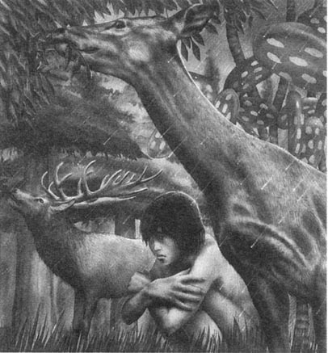
我终于挺过了一生中最困难的两周。我现在觉得好多了，所以我又开口说话了。没有值得一提的事情时，我什么都不想说。
大部分时候都在下雨。不下雨的时候，还是有水顺着树叶流下来。我身上总是湿的，饥寒交迫，累得不行。我病了，头痛、胃痛、腿脚也痛，身上总是会有伤口。最糟的是我想家了，我想回到村庄里。
这是真的。我不想待在这里。鹿不是人。我说过我不需要和人在一起，但是我想我错了。找不到人说话的日子真是难以想象。
我是鹿宝宝和鹿哥哥的朋友，我喜欢它们俩。宝宝很乖，哥哥什么都不怕。那两只年长的鹿什么都怕——怕鸟叫，怕鸟不叫，怕云遮住了太阳，怕树叶掉下来。它们在害怕的时候，就会跳起来。它们总是在跳。
当鹿妈妈觉得有危险时，它会用鼻子来拱我和鹿宝宝，把我们带到枝叶繁密的树林深处。我们在树林里钻进钻出，悄悄地迅速移动。我现在也开始什么都怕。这挺傻的。我没看到有什么值得害怕的。
因为吃得不多，我瘦了。我每天找一些野菜和水果充饥，睡前喝一些鹿奶。这就是全部。
这些鹿总在不停地吃。它们喜欢吃某些树的叶子，不吃别的。鹿妈妈要帮助小鹿取到树叶和水果。它也想要帮我，但是我是不吃鹿食的，我不能吃这些。
因为我不好好吃东西，鹿妈妈不高兴了。可怜的鹿妈妈！我整天都生它的气，但是晚上却像婴儿一样挨着它睡觉。真奇怪。我对鹿妈妈的感情很强烈——超过我对自己妈妈的感情——好的坏的都有。
鹿爸爸不经常靠近我们。它不停地四处走动。它个子高，可以望穿树丛。它高高地昂着鼻子，仔细地嗅着。它总霸占最好的食物，如果家里其他成员在它附近吃东西的话，会被它赶走。
我第一周身无寸缕，非常不好过，因为整天待在森林里，总是会弄伤自己，于是我用树叶做了衣服。衣服不太结实，我得不停地做新的。但是树叶衣服却有效地防止了受伤，同时还能保暖——虽然不是特别暖和，但是我觉得没有以前那么冷了。
所以我感觉好些了，也暖和一些了，胃里多了一些食物，身上也不疼了。
我更强壮、更敏捷了。听觉和视觉更为敏锐。如果不能跟任何人说话，你就会多看、多听、多闻。
鹿哥哥和我总是比赛谁跳得更高，大部分时间都是我输。但是我在进步，我们两个都喜欢这样的比赛。
今天早上没有下雨，真是很棒，头顶的绿树蓝天相映成趣，脚下虽不暖和，但也不再寒冷潮湿了。
哎哟！
有事发生！鹿爸爸跑过来用角把我顶翻，它是要让我安静。现在我说话非常轻。所有的鹿都停止了进食。只有鹿爸爸还在走动，走得很慢，小心翼翼地放下一只蹄子，然后才提起另一只。
现在非常非常安静，一点儿声音都没有。为什么这么安静？为什么小鸟都不叫了？
噢！现在我看见了，有一只野兽正不紧不慢地穿过树林。那是一只狼！
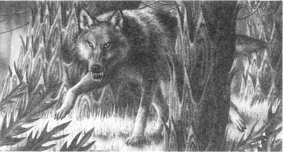
只有一只狼。哎哟！鹿妈妈在拱我，要我跑开。现在它又在拱鹿宝宝。鹿群跑开了，进入了树林深处。鹿哥哥不想逃跑，它正看着我。我要逃吗？
不，我不会逃。这样很蠢。我们四只鹿和一个人，对付区区一只狼。我们并肩作战，狼会落荒而逃的。
我不走了。我准备好一根粗木棍和一些石块。要是不得不独自对付这只狼，我也能行。
鹿爸爸走了。鹿妈妈回来找我——不，它没有，它停下了，它不能丢下小鹿。
鹿哥哥来和我站到一起。鹿妈妈和小鹿离开了。现在只剩我、鹿哥哥，还有这只恶狼了。我不害怕。看看石块击中狼鼻子它会有什么反应。看招！
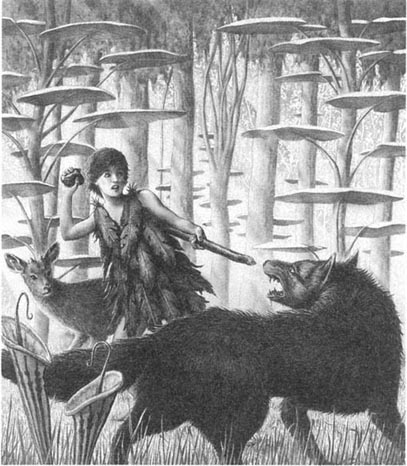
没有打中！我扔石块很准，但是狼敏捷地跳到一边。现在我用尽全力扔出每一块石头。狼四下里跳来跳去，但是它没有逃走。没关系，我还有棍子；鹿哥哥可以用蹄子去对付它。我们会没事的。
天哪，不！
又来了两只狼。它们动作飞快。鹿哥哥，走！离开这儿！这就对了。
现在只剩我一个人了，只有一件事可做。
* * *
我差点儿死了。我决定留下来对付狼时，犯了个很大的错误。人才会这样做，鹿不会。我是一头鹿。我闻起来像是一头鹿，所以狼也觉得我是鹿。
我感觉很糟，觉得自己很弱小，微不足道。我不是人，只是动物。如果另一只动物比我强壮，它就能杀死我。我之前还不明白这个道理。
我很高兴我救了鹿哥哥。第一只狼迅速向我冲过来，我突然从它身上跳过去。我擅长跳跃。和鹿在一起待了两周后，谁都会跳得非常好。
这只狼没有立刻转过身来。我向另外两只狼望去，它们没有朝我追过来，它们正在追逐鹿哥哥。情况不妙。
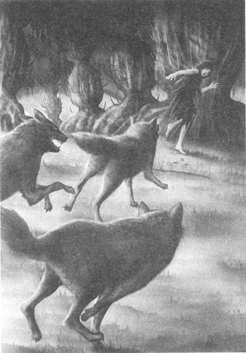
我尖叫起来，因为我想让狼以为我害怕，然后它们就会追我，而不去追鹿哥哥。但是我尖叫的时候，我知道自己是真的害怕了，狼也知道。太可怕了，三只狼都停了下来，径直向我冲过来。
是，我害怕了！我扔下木棍就跑……就像一只鹿。我前面有棵大树，我几秒钟就爬到了树顶。
我待在这儿。这三只狼在树下守了我几个小时，眼里充满了饥饿的神情。它们刚刚离开，天就黑了。
我只能待在这儿了。在黑暗里我不可能找到鹿群。我不能靠着鹿妈妈睡觉，喝不了它的奶。我想在树上也不可能睡得着……但是我会试试。我很难过，鹿哥哥因为我差一点儿死掉。
我还会再见到那群鹿吗？
4．Killing a wolf
4
Killing a wolf
It's morning and I'm still up in the tree. I didn't sleep all night. I'm hungry, tired, cold and angry. I'm going to climb down the tree and look for some food.
* * *
That's better. I can't think when I'm hungry.
When I remember how I ran away from those wolves, I feel angry and my face gets hot. Why did I run away? I wasn't afraid!
I screamed and ran away to save Brother, of course. That's why. I don't want to go back to the deer family. If I'm not living with deer, I don't have to run away from anything. I can live alone for my Year of Sharing. I can find food, water, places to sleep and leaves to make clothes with. I don't need the deer; life is more difficult with them.
I have decided not to follow the deer and I feel happier now. I won't get lonely or bored; I'm better alone.
If a wolf comes, I'll kill it. I can fight wolves if I have sticks and stones. When I find the dead body of an animal, I will cut it up and use it to make something for killing wolves — a catapult which will shoot stones.
I feel much better.
* * *
Things have changed again. I'm back with the deer.
I was sitting on the ground, cutting a stick with a stone, when I heard Mother calling. She was far away. I only heard her because it was very quiet all around.
She was calling, 'Where are you? Where are you?' and I knew she was calling me.
It was terrible. I began crying. She's only a deer. I smell like a baby deer to her, but I'm not really.
I answered, 'I'm here!'
Mother heard me and ran to me. She was calling all the time. She came through the trees with Baby behind her and I stood up, still crying, and I...
I don't want to talk about it any more. Sometimes I don't understand myself. I never put my arms round my real mother like that, and Mother is only a deer.
What could I do? I walked with Mother and Baby through the forest for a long time until we found Father and Brother. Father stopped eating and hit Mother with his antlers. He was angry; he wanted her to be near him all the time.
When Father came up to me, I thought he would hit me too, but he didn't. He smelt me carefully, then touched me softly with his head. To him, I'm just a baby.
Brother jumped straight up and down; he was so happy to see me again. I was surprised how happy I was to see him too.
In the last few days we have walked and walked. When the others want to stop and eat, Father keeps us moving. We have swum across rivers, pushed through trees, run across open ground and moved back into trees again. I know why — we all know.
There's a wolf, or wolves, following us. It calls — a long, hungry howling, often at night. It's following our smell. That's why Father tries to go through water as often as possible — smells are lost in water.
I'm busy with my special answer to this danger — I'm making weapons. I break up stones into little pieces. Some pieces of stone are really sharp and will cut like a knife. I've put them on long sticks to make spears.
I found a dead animal and cut off its skin, then I cut the skin into long, thin pieces. Now I have a good catapult; I can kill wolves.
Brother's teaching Baby to jump as high as she can. That's his job. Mother teaches Baby about eating and smelling things and cleaning herself. Father doesn't have time to teach Baby. He's always walking round. He's smelling, listening, watching the trees, waiting for something bad to happen. He always knows the best place to go next, because he never stops thinking about it.
Brother, Baby and I often jump together, moving in sudden, high jumps across the ground. I'm beginning to understand why deer jump so much. A jump catches the eye of a wolf. When a wolf runs after a deer, another deer will jump and the wolf will turn to look at it. Then a third deer will jump. The wolf turns again. Each jump takes the deer away from the wolf and the wolf can't decide which deer to follow. It's clever.
Yesterday something bad happened. Baby did a good, high jump but when she came down, she gave a little scream. She tried to walk and screamed again, a little, high scream. Mother ran to her and Father stood not far away and watched.
I couldn't see what was wrong at first; Mother didn't want anyone to come near. In the end I lay down next to Baby and saw what it was — a stick from a tree was deep inside Baby's leg and Mother's teeth couldn't pull it out. Mother didn't let me touch it.
Baby could only walk on three legs and she got tired very quickly. Father tried to move on again, away from the wolf, but Mother wanted to stay with Baby. Father pushed Mother and she followed him...but then went back to Baby. Father went back and pushed Mother again.
In the end Father took Baby to a dark place where she could hide under leaves. It was near a river and the ground was wet. That would hide Baby's smell from the wolf.
Then Father pushed us all away. But when we left, we could hear Baby calling after us. She didn't understand. Her calls said, 'I'm here! I'm here!'
Father didn't let Mother go back. We walked on. The howl of a wolf came through the trees from far away. I thought of a wolf finding Baby.
I just couldn't leave her.
I stopped. Mother called me but Father was pushing her to go on. I stayed still and they went into the trees and I couldn't see them any more. There are no goodbyes with deer.
I ran back to Baby and she stopped calling. She was happy.
I put my weapons on the ground — my catapult and spears. When I touched Baby's leg, she didn't like it; it hurt a lot. She didn't let me touch it again.
So I lay down heavily on top of her. I held the stick in her leg and moved it slowly and carefully. I pulled and turned it until it came out, all of it. Then I went and carried water in my hands from the river to wash the wound on her leg. That was all I could do.
I brought leaves for Baby to eat, and water for her to drink. When it got dark, I lay down with her and we slept, keeping warm together.
I've just looked at her leg and I think it's getting better. But she can't walk on it yet. We have to stay here for a few days. Then we will follow the deer family. I think I can find them. I can smell where they have been, I can see where they have walked and I understand how Father thinks.
With luck I can find them.
* * *
The wolves found us two days later. It was evening, just before dark. Two wolves walked out of the trees and saw me carrying food to Baby. They were thin and hungry wolves. I don't think they have eaten for a long time.
My weapons were under the leaves with Baby. I dropped the food and ran and quickly got a catapult and a few stones. Of course, the wolves thought I was running away and they came to get me.
I turned, holding the catapult, and looked at them, and they stopped in surprise. Why wasn't I running away?
I felt cold inside, but not afraid. 'Which one of you shall I kill?' I asked them. 'Which one of you will die first?'
The wolves heard my cold voice. They knew I was dangerous, but they were hungry. They came slowly and they didn't make a sound. I shot a stone from the catapult and it hit one wolf on the eye. The wolf screamed. I followed that with more stones until a very big one cut its head open. The wolf fell over on its side and didn't move.
The other wolf jumped, turned and ran back into the trees. I looked at the dead wolf on the ground and felt sorry.
From the trees came a long, lonely howl.
I waited until it was dark and then Baby and I began walking. Baby walked for a while and then rested. I couldn't follow the deer family in the dark because I couldn't see anything and the smells were cold. But I thought I knew where Father would go.
There was a moon. I decided we had to walk all night because the other wolf was still out there somewhere.
Baby's leg was doing well; I was happy about that. An hour later, we were far from the dark hiding place under the leaves. The wolf wouldn't find us now.
There was a howl in the night. Then another howl, and another. Three, four, five, six howls — from different sides. The wolves were far away, but there were lots of them. Too many.
And so I learnt something new. Wolves have families too — big families. If you kill one wolf, the family wants to find the killer. We were in trouble.
catapult n. a stick like the letter 'Y', with a piece of elastic, which you can use for shooting stones 弹弓
understand v. to know how or why something happens, or what effect or influence something has 理解，明白
howl v. to make a long loud sound 嚎叫
weapon n. something which can hurt or kill people 武器
spear n. a weapon made from a long stick with a sharp point at the end 矛
skin n. the outside covering of the body of a person or animal 皮（肤）
hide v. to put something in a place so that no one can find or see it 隐藏
drop v. to fall or allow to fall; to let go（使）掉下
luck n. an in fluence that seems to make things, especially good things, happen to people for no particular reason 好运
killer n. someone who kills another person 凶手
反击
4．反击
早晨了，我还在树上。我彻夜未眠，饥寒交迫，又累又气。我要爬下树去找些吃的。
* * *
这样好些，我饿的时候没法思考。
每当我想起自己怎样从狼口下狼狈逃生，就禁不住生自己的气，面红耳赤。我为什么要逃？我不害怕啊！
我尖叫逃跑是为了救鹿哥哥，当然这就是原因。我不想回去找鹿群。如果我不和它们在一起的话，我就不会逃避任何事。我可以独自一个人生活，度过我的“分享年”。我可以找到食物、水、睡觉的地方和用来做衣服的树叶。我不需要和鹿群在一起，和它们一起生活更麻烦。
决定不跟着鹿群之后，我感觉宽慰了些。我不会觉得孤独和无聊，一个人更好。
如果狼来了，我就杀死它。我可以用木棍和石块对付狼。如果找到动物的尸体，我会把它剖开，用它做成杀狼的武器——能够弹射石块的弹弓。
我觉得好多了。
* * *
事情又有了变化，我回到了鹿群。
我坐在地上，用石块削一根木棍，这时我听到了鹿妈妈的召唤。它在很远的地方。因为四周非常安静，我才听到了它的声音。
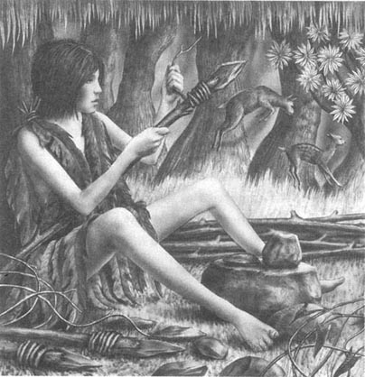
它在叫：“你在哪儿？你在哪儿？”我知道它是在呼唤我。
真糟糕，我居然哭起来。它只是一头鹿而已。对它来说，我闻上去像鹿宝宝，但其实我不是。
我回应：“我在这儿！”
鹿妈妈听到了我的回答，向我跑来，它一直在叫，鹿宝宝跟在它身后一起穿过树林。我站了起来，仍然在哭，我……
我不想再提它了，有时我也不明白自己。我从来没有像这样伸出双臂拥抱我真正的妈妈，而这个妈妈只不过是一头鹿。
我能怎么办？我跟着鹿妈妈和鹿宝宝穿过森林走了，很久才找到鹿爸爸和鹿哥哥。鹿爸爸停止吃东西，用鹿角撞鹿妈妈。它生气了，它要鹿妈妈随时跟在它身边。
鹿爸爸又走到我跟前，我以为它也要打我了，但是它没有。它仔细地闻我的味道，然后用头轻轻地碰碰我。对它来讲，我只是个鹿宝宝。
鹿哥哥跳上跳下，它非常高兴再见到我。我吃惊地发现，见到它我也很高兴。
在过去的几天里，我们东奔西走。当有成员想停下来吃东西时，鹿爸爸却让我们继续赶路。我们游过河流，穿过树林，奔过旷野，然后又回到树林。我知道这样赶路的原因——我们都知道。
我们的后面跟着一只狼，或者是一群狼。它常常在夜晚嚎叫——那是饥饿的长嚎。它追随着我们的气味。所以鹿爸爸尽量领我们走水路——因为在水里闻不到我们的气味。
我自己也在忙着为应对这个危险做特殊的准备——我在制作武器。我把石头砸成小碎块，有些小石块十分锋利，能像小刀一样切割。我把石块固定在长棍子上做成矛。
我找到了一具动物的尸体，把它的皮扒了下来，然后割成细长条。现在我有弹弓了，我可以杀死狼。
鹿哥哥在教鹿宝宝怎么跳得更高，那是它的工作。鹿妈妈教它吃东西、闻东西和保持清洁。鹿爸爸没有时间来教鹿宝宝。它总在四下走动，一边闻，一边听，观察树的动静，时刻警惕着危险的发生。它总是知道接下来到哪里最安全，因为它不停地思考着这个问题。
鹿哥哥、鹿宝宝和我经常一起跳跃，突然跑动、高高跳起、跃过地面。我开始了解为什么鹿总是在跳跃，跳跃能够吸引狼的注意。当狼紧追一只鹿时，另一只鹿跳起来，狼会转身去看。然后第三只鹿又跃起，狼又转过去看。每一跳都使另外的鹿离开狼更远，让狼不知道去追哪只鹿。这很聪明。
昨天出了点儿问题。鹿宝宝高高跃起，落到地上时轻轻尖叫了一声。它试着走步，然后又叫了一声，这一次叫声有些高。鹿妈妈跑到它跟前，鹿爸爸站在不远处观察。
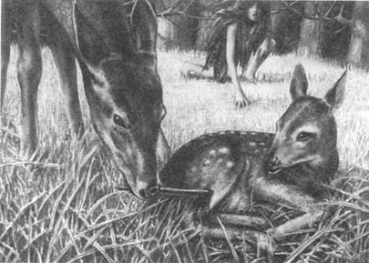
一开始我不知道怎么了。鹿妈妈不让任何人接近。最后我躺在鹿宝宝的身边，才看清怎么回事——一根树枝深深地插进了鹿宝宝的腿，鹿妈妈无法用牙齿把它拔出来。鹿妈妈不准我碰树枝。
现在鹿宝宝只能靠三条腿走路，很快就累了。鹿爸爸想要继续赶路，把狼甩掉。但是鹿妈妈想留下来照顾鹿宝宝。鹿爸爸拱着鹿妈妈走，它跟上来……然后又回到鹿宝宝身边。鹿爸爸又回来拱鹿妈妈。
最后鹿爸爸把鹿宝宝带到了暗处，鹿宝宝可以用树叶挡住自己。这里离河很近，地面潮湿。这样狼就闻不到小鹿的味道。
然后鹿爸爸把我们都赶走了。但是离开的时候，我们听到鹿宝宝在后面叫。它不明白怎么了，它叫着：“我在这儿！我在这儿！”
鹿爸爸不让鹿妈妈回去。我们继续前进。从树林深处远远传来狼嚎。我想狼发现了鹿宝宝。
我不能丢下它。
我停下来。鹿妈妈叫我走，但是鹿爸爸催它继续走。我待住不动，它们走进了树林，再也看不见了。鹿不会说再见。
我跑回到小鹿身边，它停止了呼喊，充满了喜悦。
我把武器放在地上——我的弹弓和矛。我碰了碰鹿宝宝的腿，它不乐意了，因为那很痛。它不让我再碰。
所以我死死地压在小鹿身上，握住它腿上的树枝，慢慢地小心移动着它。我边拔树枝边转动它，直到完全拔出。然后我去河边用手捧些水来清洗它腿上的伤口。我只能做这些。
我拿树叶来给小鹿吃，又找来水给它喝。天黑后，我和它依偎着入睡，互相取暖。
我查看了小鹿的伤腿，我想它正在好转。但是小鹿仍然不能用那条腿走路。我们还要在这里待上几天，然后就可以去追上鹿群。我想我能找到它们，我能闻出它们到过的地方，能看出它们曾经经过哪里，而且我知道鹿爸爸的想法。
要是运气好，我能找到它们。
* * *
两天后，狼群找到了我们。那是在傍晚，天快要黑的时候。两只狼走出树林，看见我给小鹿拿吃的东西。这两只狼又瘦又饿。我想它们很长时间没有吃过东西了。
我的武器放在鹿宝宝那儿的树叶下面，我扔掉吃的就跑，飞快地拿起一个弹弓和几块石头。当然，这两只狼以为我要逃走，都朝我跑来。
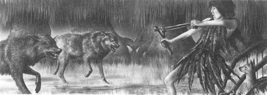
我转过身，举起弹弓，盯着它们。它们愣住了。为什么我不逃呢？
我体内发凉，但毫不畏惧。“我杀你们中的哪一个？”我问它们，“谁想先死？”
那两只狼听到了我冰冷的声音。它们知道我不容易对付，但是它们饥肠辘辘。它们悄无声息地慢慢逼近。我用弹弓射出一个石块，打中了一只狼的眼睛，那狼尖叫起来。我继续射出石块，直到一块大石头把它的脑袋砸开了花。这只狼翻身倒下，再也不动了。
另一只狼跳起来，转过身，跑回了树林里。看着地上的死狼，我觉得难过。
树林中传来了孤独的长嚎。
等到天黑，鹿宝宝和我就动身了。小鹿走一阵，歇一阵。在夜里我没法跟踪鹿群，因为我什么也看不见，气味也淡了。但是我想自己知道鹿爸爸要去哪里。
今夜有月亮。我决定整夜行进，因为另一只狼还在附近。
鹿宝宝的腿好了许多，我很高兴。一个小时后，我们已经远远离开了那个树叶下的藏身之处。现在那只狼已经找不到我们了。
晚上，一声狼嚎传来，然后有一声回应，然后又是一声，三声、四声、五声、六声——从各个方向传来。狼群离得还远，但是有很多很多只狼，太多了。
所以我又学到了新东西。狼也有家族——大家族。如果杀死了其中一只，狼群就要找出凶手。我们有麻烦了。
5．The wolves are coming
5
The wolves are coming
I don't like danger, but if you live through it, you feel good.
Just now we're resting on the other side of a large lake. The wolves sound very far away and I think we're OK. I've done everything possible to make sure they can't follow us.
When I heard all those wolves howling in the dark, I touched Baby and said, 'Stand very quietly and listen.'
Of course Baby didn't understand, but she stopped and didn't move. I was listening for water — a river or anything. I couldn't hear water, just the wind in the trees and a wolf singing to the moon.
So I tried smelling for water. My nose is wonderful at smelling now and, yes, I could smell something wet. When I turned round, I knew where the wet smell was coming from.
'We'll be fine, Baby,' I said. I put my hand on her head. 'But we can't stop any more until we get to the water. Can you run with that leg?'
Baby's leg was hurting, but she ran when I ran. She was afraid of losing me. I was all she had.
The wolves howled, not all the time but sometimes. I didn't know how near they were. Each howl went on for nearly a minute. Sometimes I didn't know if they were behind or in front of us.
I saw light through the trees. I hurried and Baby came after me. Soon we came to open ground, and there it was — moonlight on water! Not a river, but a big lake.
'It's a long swim, Baby,' I told her, 'but if we stay here, we'll die.'
Baby wasn't afraid of water. She followed me in and swam easily beside me. It was easier for her to swim than run with her bad leg.
How far was it to the other side? I don't know, but it took us a long, long time. It was more difficult for me than Baby in the end. I'm a walking, climbing animal; deer are running, jumping, swimming animals. My arms and legs hurt, my body felt heavy and I swam more and more slowly. But Baby was always there beside me, touching me all the time, her legs moving quickly in the water. She was warm, while I was cold, and that helped me.
The moon went behind clouds and we swam in the dark. I was happy about that because I was afraid the wolves would see us. When my feet hit stones underneath me, I knew the water wasn't deep any more. I stood up. A minute later Baby was walking too. We walked out of the water. My legs couldn't hold me up. I half fell and lay on the ground and felt very happy. Baby lay beside me, wet but warm. I slept for a little while.
I've just woken up. We have to begin moving soon. It's still night, but we must be far away from here by morning. Some of the ground is soft. Soft ground is dangerous because the wolves can see where we have gone. We must go on the hard, stony places.
* * *
It's wonderful! We're back with Mother, Father and Brother. I wasn't really sure that I could find them.
When the deer family left us three days ago, I saw some hills to the north. Father always hides in the trees when there's danger, and up there on the hills there are a lot of big, dark trees. Just right for Father.
I had good luck. When we got to the hills, we didn't have to look very far. I could hear the deer eating before I smelt them.
Baby went in a funny, jumping run up to Mother. She kept one foot off the ground; it was still hurting. Mother and Baby touched heads and made noises. Father came and smelt me while Brother watched. Father doesn't usually get too near anyone in the family, but he stood nearly touching me. I think he was saying thank you, and my eyes were wet.
I spoke to Father. 'We must go deeper into the trees. There are wolves behind us trying to follow us.'
Father didn't like me talking. He moved away and began eating again. Then Brother came. He wanted to play.
'I'm too tired,' I explained. 'I want to get deeper into the trees, then I want to sleep.'
Nobody did what I wanted. They didn't understand about the wolves, and the leaves were sweet. Baby drank Mother's milk and Brother and Father went on eating.
So I slept where I was.
It's afternoon now. We're still here. It's warm and bright and there's a blue sky. I'm not afraid any more. I was just tired. The wolves have lost us and we're OK.
* * *
I was wrong. The wolves followed us. I could hear many wolves howling. They were far away, but coming.
I was angry with myself. How did the wolves find us? Baby and I tried so hard — we ran, we swam across water, and we stayed away from soft ground, but it didn't help.
Then I saw something which explained it. There were flies walking around a drop of blood on the ground. The cut on Baby's leg was open again, and the wolves were following the strong smell of blood.
It was too late to go deep into the trees now. The wolves would find us. I looked at the four deer — my family — and I knew I couldn't let them die. There was an answer. It was dangerous, but I had to do it.
First I cleaned Baby's cut again and put leaves on it to stop the blood. Then I cut myself — a small cut on the leg, with a sharp stone.
'You go up there,' I said to Father, 'up into the trees and I'll go along open ground, over there. The wolves will follow my blood. If the wolves don't catch me, I'll wait for a few days and then I'll find you again. Do you understand?'
Of course he didn't, but he understood the danger that was coming. Brother wanted to come with me. This time Father got angry with him and pushed him up the hill. No goodbyes, of course.
I began running down the hill where there were no trees. I looked back and I couldn't see the deer.
I was stronger after my sleep and I ran fast. I knew where I was going. There was a high, rocky hill about two miles away — I could climb it, but wolves couldn't. But could I get there before the wolves found me?
I ran and didn't look back. After ten minutes I wanted to stop and rest, but then I heard the howls. I looked back and the wolves were running behind me.
So I didn't rest. I ran and they ran. I was afraid, really afraid. I couldn't feel my legs. 'Don't fall, keep going,' I said to myself.
I ran to save my life. When I came to the rocks, I didn't stop; I climbed up faster than a wild cat. One wolf hit another wolf just below me and fell over. Their angry howls rang in my ears. I went up and up until I came to a place where I could rest. I sat with my back to the rock and looked down. Wolves everywhere...
I'm here and they can't get me now. When I've rested, I'll climb up to the top and I'll be OK.
No, wait — perhaps I'll stay here until morning. I need to sleep. I'll feel better after a good sleep. I don't feel very well. I can't remember the last time I ate something. Listen to those wolves! They're hungry too, of course. I'm an animal just like them.
RICHARD'S FATHER SPEAKS:
What happened? We don't know.
When Richard's Year of Sharing finished, I went to bring him home. I followed the radio call of his recorder. I found the recorder at the bottom of the hill where he tried to escape from the wolves. The recorder was there, but not Richard.
Did he fall while he was sleeping? Did the accident happen next morning while he was climbing to the top? I don't know.
I am very unhappy. The village says we can now have another child. But I don't want one. I cannot say more.
RICHARD'S MOTHER SPEAKS:
Richard was a difficult boy. He was angry and he wanted to bring back the old world, the world where people took everything and animals had nothing. But in the end he learnt to share. He learnt that people are animals too, and that the world belongs not just to people, but to all animals. It is a hard lesson to learn, but we must all learn it. Now my son is dead. But the people of this village, and their children, and their children's children, will never forget him.
possible adj. that can be done 可能的
underneath prep. Below 在……下面
hold up support, sustain 支撑，维持
stony adj. full of stones 多石头的
funny adj. amusing, comical 有趣的，滑稽的
explain v. to tell someone something in a way that helps them understand it better 解释
rocky adj. full of rocks 多岩石的
escape v. to get away from a place where you are in danger 逃走，逃脱
狼群来了
5．狼群来了
我不喜欢危险，但如果能够绝处逢生，感觉会很棒。
我们在一个大湖的另一边休息。狼的嚎叫声听起来很远，我想我们是安全的。我已经竭尽所能来确保狼群追不到我们。
当在黑暗中听着此起彼伏的狼嚎时，我碰了碰鹿宝宝说：“安安静静地待着，仔细听。”
鹿宝宝当然听不懂我的话，但是它停住不动了。我想听到水声——一条河或是其他什么。我没有听见，只听到风穿过树丛和狼对月嚎叫的声音。
我又试着嗅水的味道。现在我鼻子的嗅觉很灵。是的，我闻到了潮湿的味道。当我一转身，我知道了那味道是从哪儿来的。
“我们会没事的，宝宝。”我把手放在它的头上。“但是找到水之前我们不能停下来。你能用那条腿跑吗？”
鹿宝宝的腿还在疼，但是我在跑的时候，它也跑起来。它怕失去我，我是它唯一的依靠。
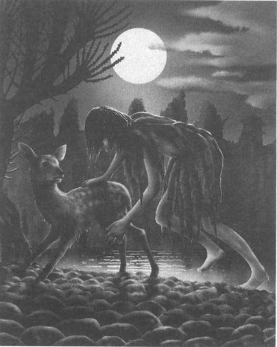
群狼还在时不时地嚎叫着。我不能确定它们离得有多近。每一声嚎叫都持续将近一分钟之久。有时我分不清狼群是在后面还是在前面。
我看到有光线穿透树林。我加快速度，鹿宝宝紧紧地跟着。很快我们到了空地，就是这儿——月光倒映在水面上！不是河，而是一个大湖。
“要游很长距离呢，宝宝。”我对它说，“但如果待在这里，我们会没命的。”
鹿宝宝不怕水。它跟着我走进湖水，在我身边轻松地游着。对它来讲，用伤腿游泳比跑路容易。
到对岸有多远？我不知道，但这花了我们很长很长时间。最后我反而比鹿宝宝更觉困难。我是擅长行走和攀缘的动物，而鹿则擅长奔跑、跳跃和游泳。我的胳膊和腿脚很疼，身体发沉，游得越来越慢。但是鹿宝宝一直在我旁边，不停地碰碰我，它的腿在水里飞快划动。我有些冷，但是鹿宝宝的身体很暖和，让我好受了许多。
月亮隐入云朵背后，我们在黑暗中继续往前游。这让我觉得欣慰，因为我怕狼群会看到我们。我的脚碰到了身下的石头时，我知道水已经没那么深了。我站了起来。很快鹿宝宝也走起来了。我们走出湖面。我的双腿已经撑不住了。我倒下躺在地上，心里非常快慰。潮湿而温暖的鹿宝宝靠着我卧下，我睡了一小会儿。
我刚醒过来，我们马上又要开始赶路。夜晚还没有过去，但是在早上之前，我们必须要远离这里。这儿有的地面很软，松软的地面很危险，因为狼群会看到我们曾从哪儿经过。我们得在坚硬的石头地上行进。
* * *
真是太好了！我们又回到了鹿妈妈、鹿爸爸和鹿哥哥的身边。我原来并不敢确定能不能找到它们。
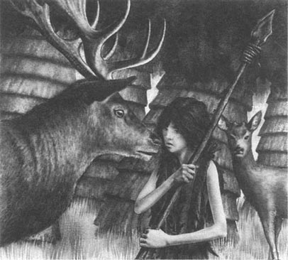
三天前，当鹿群离开我们的时候，我看到北面有一些小山。有危险时鹿爸爸总是躲进树林；而那边山上有很多高高大大、黑黝黝的树木，对鹿爸爸正合适。
我运气不错。我们到了山上没有找太远。在闻到气味之前，我就听到了鹿群吃东西的声音。
鹿宝宝滑稽地跳到鹿妈妈身边，一只脚没有着地，那儿还疼呢。鹿妈妈和鹿宝宝碰碰头，发出声响。鹿爸爸走过来闻闻我，鹿哥哥在一边看着。鹿爸爸一般不和家里人走得太近，但是它这时挨着我站着。我想它是在说谢谢，我的眼睛湿润了。
我对鹿爸爸说：“我们必须走进树林深处，后面还有狼在追我们。”
鹿爸爸不喜欢我讲话。它走开了，又开始吃东西。鹿哥哥走过来，想和我玩。
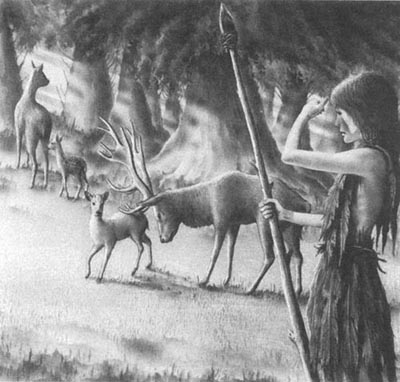
“我太累了。”我解释道，“我想到林子里去，然后睡觉。”
没有谁按我想的去做。它们都不懂得狼的习性，而树叶是如此美味。鹿宝宝在喝妈妈的奶，鹿哥哥和鹿爸爸还在吃。
所以我就地睡下了。
现在已经是下午。我们还在这儿。天气温暖、睛朗，天色湛蓝。我不再害怕了，我只是累了。狼群没有找到我们，我们安全了。
* * *
我错了，狼群跟了上来。我可以听见很多的狼在嚎叫。它们还在远处，但正在逼近。
我生自己的气。狼群怎么会找到我们呢？小鹿和我已经尽全力了——我们逃跑，游过湖水，绕过松软的土地，却都没用。
然后我找到了原因。一群苍蝇围着地上的一滴血乱转。鹿宝宝腿上的伤口又裂开了。狼群沿着强烈的血腥味在追踪我们。
现在想要进入树林深处已经太迟了。狼群会找到我们。我看着四只鹿——那是我的家人——我知道我不能让它们死。有一个办法，很危险，但我不得不去做。
我先清洗了鹿宝宝的伤口，把树叶敷在上面止住血。然后我割伤了自己——用锋利的石块在腿上划了一个小口子。
“你到那儿去。”我对鹿爸爸说，“到树林里去，我去另一边的空地。狼群会跟着我的血来找我。如果狼群没有追到我，我会等上几天，然后再来找你们。明白吗？”
它当然不明白，但是它明白正在逼近的危险。鹿哥哥想和我一起走。但这次鹿爸爸对它发了脾气，把它赶上了山。当然了，没有道别。
我开始跑下山，到了没有树的地方。我回头看去，已经看不到鹿群了。
睡过之后，我更有劲儿了，我跑得很快。我知道要去哪儿。两英里外有一座高耸的石头山——我可以爬上去，但是狼不行。但在狼群找到我之前，我能到达那里吗？
我头也不回地跑。十分钟后，我想停下来歇一歇，可这时我听到了狼嚎。我转过头一看，群狼在我的身后追来。
于是我没有休息。我跑，它们也跑。我很害怕，真的害怕。我已经感觉不到我的双腿了。“不要倒下，继续跑。”我告诉自己。
我要逃命，当跑到石头山时，我没有停下；我爬了上去，比野猫还快。就在我的下面，一只狼撞到了另外一只身上，摔了下去。它们愤怒的嚎叫响彻我的耳际，我越爬越高，直到一个可以休息的地方。我坐下来背靠岩石住下看。群狼遍地……
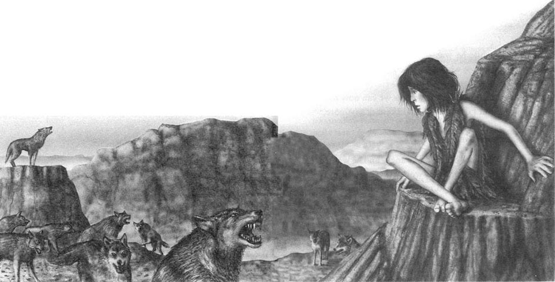
我在这里，它们现在捉不到我。等我休息好了，我就会继续爬到山顶，那样我就安全了。
不，等等——也许我要在这里一直待到早上。我需要睡觉。酣睡之后，我会觉得更有力气。我觉得不太舒服。我记不起上一次吃东西是什么时候。听听这些狼嚎！它们当然也饿了。我和他们一样，也是动物。
理查德爸爸的话：
到底发生了什么？我们不知道。
当理查德的“分享年”结束后，我去接他回家。我跟着他的录音机的无线电信号去找。我在山脚下发现了录音机，在那儿他曾试图摆脱狼群。录音机还在，但理查德不在了。
他是睡着的时候跌下山的吗，还是第二天早上爬向山顶时出的意外？我不知道。
我非常难过。村里人说我们可以再生一个孩子，但是我不想，我讲不下去了。
理查德妈妈的话：
理查德是个倔强的孩子。他心中充满愤怒，想找回过去的世界。在过去的世界里，人类拥有一切，而动物一无所有。但是最后，他学会了如何“分享”，懂得了人也是动物的一分子，而世界不仅仅属于人类，也属于所有的动物。学习这一课并不容易，但却是我们所有人的必修课。现在我的儿子死了，而村里所有的人，还有他们的孩子们，他们孩子的孩子们，将永远铭记他。
ACTIVITIES: Before Reading
ACTIVITIES
Before Reading
1．Read the story introduction on the first page of the book. How much do you know now about the story? Tick one box for each sentence.
1) Richard lives in the 1990s.
YES □／NO □
2) Richard lives in a big city.
YES □／NO □
3) Richard wants a fast car.
YES □／NO □
4) Richard is twelve years old.
YES □／NO □
5) Richard is going to live with animals.
YES □／NO □
6) Only a few children go and live with animals.
YES □／NO □
2．What will Richard's life be like in the forest? Can you guess? Make sentences, using some of these words.
food, clothes, sleep, friends, mother and father, bicycle
3．What is going to happen in the story? Can you guess? Tick one box for each sentence.
1) Richard will live with a family of cats.
YES □／NO □
2) Richard will come home after a few weeks.
YES □／NO □
3) Richard will kill an animal.
YES □／NO □
4) Richard will die.
YES □／NO □
ACTIVITIES: While Reading
ACTIVITIES
While Reading
1．Read Chapter 1. Are these sentences true (T) or false (F)? Rewrite the false ones with the correct information.
1) Richard and three more children are going to do their Year of Sharing.
2) Richard has got a recorder in his ear.
3) Richard's friends are at the party with him.
4) Richard wants to live with a family of sheep.
5) Richard's mother came to say goodbye to him.
6) Richard is going to go to sleep and wake up with an animal family.
2．Read Chapter 2, and then answer these questions.
1) Which animal family did Richard wake up with?
2) Why was Richard cold?
3) What food did Richard see?
4) Why didn't he eat it?
5) What do the deer noises mean?
6) Who did Richard play with?
7) What did the family do in the afternoon?
8) Where did Richard fall asleep?
9) What did he do before he fell asleep?
3．Read Chapter 3. Here are some untrue sentences about it. Change them into true sentences.
1) Richard didn't want to be back in the village.
2) Richard didn't like Baby and Brother.
3) Richard ate a lot of fruit and vegetables every day.
4) Mother knocked Richard over with her antlers.
5) Richard saw a cat coming through the trees.
6) Richard threw stones at Baby.
7) Two wolves were following Richard.
8) The three wolves ran away from Richard.
9) Brother climbed a tree.
4．Read Chapter 4, and then answer these questions.
Why
1)...did Richard scream and run away?
2)...did Richard go back to the deer family?
3)...did Father hit Mother with his antlers?
4)...did Brother jump up and down?
5)...did Father go through water as often as possible?
6)...did Richard break up stones into little pieces?
7)....did Richard make a catapult?
8)...did Baby scream?
9)...did Father leave Baby near a river?
10)...did Richard run back to Baby?
11)...were the wolves surprised?
5．Before you read Chapter 5, can you guess what happens? The title of the chapter is The wolves are coming. Tick one box for each sentence.
1) Richard and Baby find the deer family again.
YES□／NO□
2) The wolves kill Baby.
YES□／NO□
3) The wolves kill Richard.
YES□／NO□
4) Richard kills a lot of wolves.
YES□／NO□
5) The deer run away from the wolves.
YES□／NO□
6．Read Chapter 5, then put these sentences in the right order.
1) He knew they were following the smell of blood.
2) Then he ran very fast to a hill two miles away.
3) It was a big lake and he and Baby swam across it.
4) So he cut himself on the leg because he wanted the wolves to follow him, not his deer family.
5) The next day, he and Baby found their deer family on the hills.
6) So he used his nose to find water.
7) He climbed up the rocks just in time.
8) Richard wanted to make sure that the wolves couldn't follow him.
9) But the wolves were waiting for him at the bottom.
10) When they got to the other side, Richard fell asleep.
11) Later, Richard heard the wolves howling again.
ACTIVITIES: After Reading
ACTIVITIES
After Reading
1．Here is a possible ending to the story. Match these parts of sentences and put them in the correct order to make a paragraph of five sentences. Use these linking words.
and /and/because/because/so/when
1)...he was frightened.
2) he suddenly fell all the way to the bottom of the rocks
3)...he was near the top,
4) Richard fell asleep
5)...tried to climb to the top of the rocks.
6) He also felt ill and hungry
7)...the wolves jumped on him.
8)...he didn't have any breakfast.
9) The next morning, he woke up early
10)...he was very tired.
11) The wolves were still watching him,
2．Which is your favourite animal? Choose from this list, or use a dictionary. Would you like to live with your favourite animal? Explain why, or why not.
bird, cat, cow, deer, fish, horse, sheep, wolf
3．Here is a new illustration for the story. Find the best place in the story to put the picture, and answer these questions.
The picture goes in Chapter ______.
1) Why was Richard in the tree?
2) What did the wolves do?
3) What did Richard do after that?
Now write a caption for the illustration.
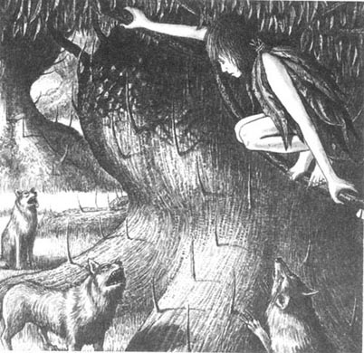
Caption: ______________________________.
4．How did Richard live in the forest? Make sentences like this from the chart.
Example: He ate roots from the ground.
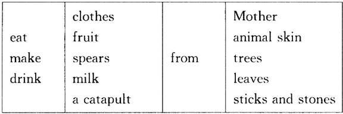
5．Match the sentences with the deer. Then use the sentences to write a short description of each deer. Join them with and where possible and use pronouns ( he, she, his, her).
Baby, Brother, Father, Mother
1) ______ makes a noise that means 'Where are you?'
2) ______ is soft to touch.
3) ______ is afraid of nothing.
4) ______ gets the best things to eat.
5) ______ is funny.
6) ______ never talks to Mother.
7) ______ helps Baby to get leaves and fruit.
8) ______ is always jumping up and down.
9) ______ smells of milk.
10) ______ teaches Baby to jump as high as she can.
11) ______ is always walking around.
12) ______ teaches Baby about eating and smelling.
6．Do you agree (A) or disagree (D) with these sentences? Explain why.
1) Richard's mother and father didn't love him.
2) Richard was right to be angry and bored with his life in the village.
3) The deer family was a better family for Richard than his real family.
4) Richard was wrong to try and save the deer family.
5) In today's world, people have everything and animals have nothing.
7．Choose one of these sentences and complete it with your own ideas.
1) The Year of Sharing is a stupid and dangerous idea because ______.
2) The Year of Sharing is a good idea because ______.
8．Richard's world is different from our world today. Write five sentences about the differences. Use some of these words.
cars, bicycles, meat, villages, cities, people, animals, factories, cats and dogs, houses, children
9．How do you imagine the world of the future? Will it be like Richard's world? Write five sentences about 'your' future.
封底
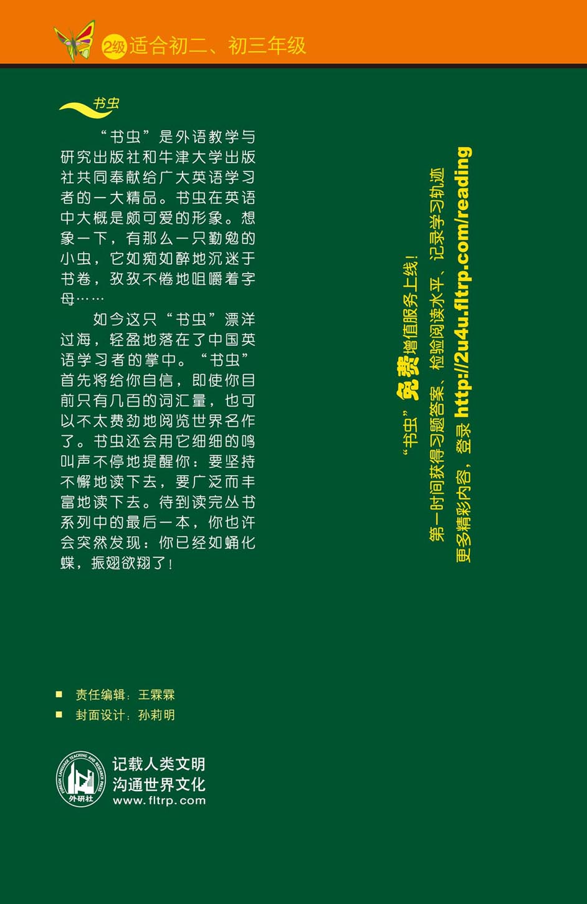